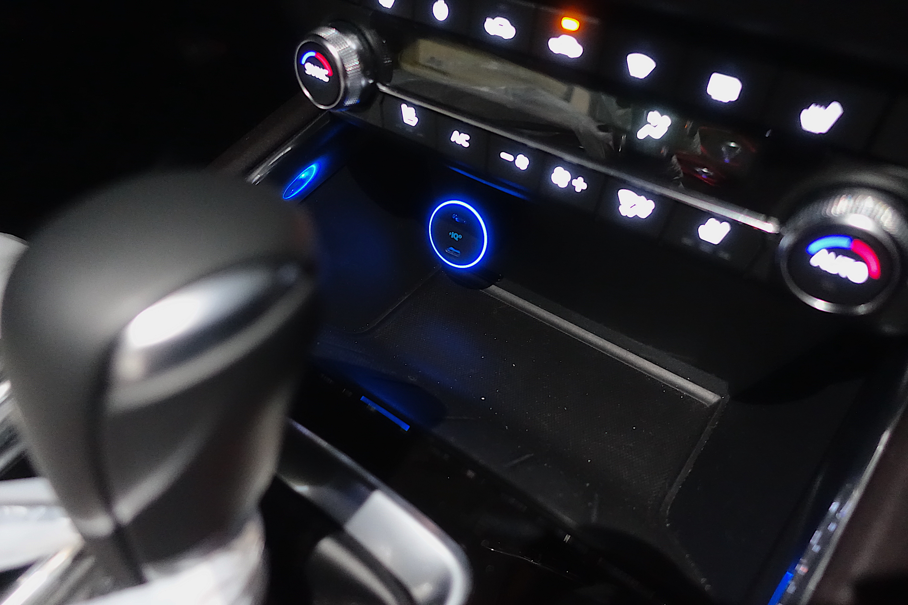

MacBookが給電じゃなくて充電できるシガーソケット用充電器が欲しかったのですが, 友人からプレゼントで頂き手に入れることができたので簡単なレビュー.
製品について
アクセサリメーカーのAnkerが販売している, シガーソケット用カーチャージャー Anker PowerDrive+ Ⅲ Duoです.
Unboxing
まずはパッケージの様子から.
Ankerのパッケージは白基調に青のアクセントが爽やかで, 個人的には結構好き.
底面には商品名である Anker PowerDrive+ Ⅲ Duoの文字.
Made in Chinaですね. ちゃんとした製品なので気にする必要はないでしょう.
中身を取り出すと,
- 充電器本体
- 取り扱い説明書（多言語）
- Ankerの商品保証に関する案内？
が入ってました.
ACタイプの充電器とかだとついてたりするUSBケーブルなんかはついていないので, PD対応のUSB-Cケーブルは別途必要です.
蛇足ですが, USB-CケーブルはAUKEY製のナイロン編みケーブル一択.
リピート購入するぐらい質感が良くて, 長いこと使える良品.
PD対応ポートが2つ & MAX48W出力
この製品が欲しかった最大の理由, それは最大30W出力ができるPDポートの存在です.
以前使っていた充電器は最大18W出力のPDポートだったため, MacBookProを充電するにはちょっと厳しい出力でした.
一方で, この製品は
- MAX30W出力のPDポート
- MAX18W出力のPDポート
を備えています. 30Wあれば, MacBookProを充電することが可能になってきます. これまでは 充電不可 or 充電していても超ローペース という状況だったので, 非常に便利になると思います.
また, 18WのPDポートも備えているので, iPadProや手持ちのPD対応Androidスマホも同時に急速充電することができます.
短い時間でもこれまで以上に充電残量が増えるようになるでしょう.
機会があれば, 実際に充電させてみて実測してみたいと思います.
イルミネーションが近未来感あるカラー
クルマのシガーソケットに接続すると, 周囲のリングが青く光ります.

特に日没後はこの光りがとても綺麗で, ふとTronを思い浮かべるような雰囲気の良さがあります.
シガーソケット周囲に間接照明などがないクルマであれば, インテリアイルミとしてみても悪くないですね. 安物にありがちな派手さではなく, 上品な感じです.
まとめ
2ポート合計48W, 片方で30W出せるカーチャージャー.
USB-AのポートよりもUSB-Cで周辺機器をまとめていきたい民としては, USB-Cの2ポート構成はありがたく, 使い勝手の良さも期待できます.
現状外出自粛が続いているので以前のように遠出ができていないのもあり, 本格運用はしばらく先となりそうですが, 充電に困ることは減りそうです.